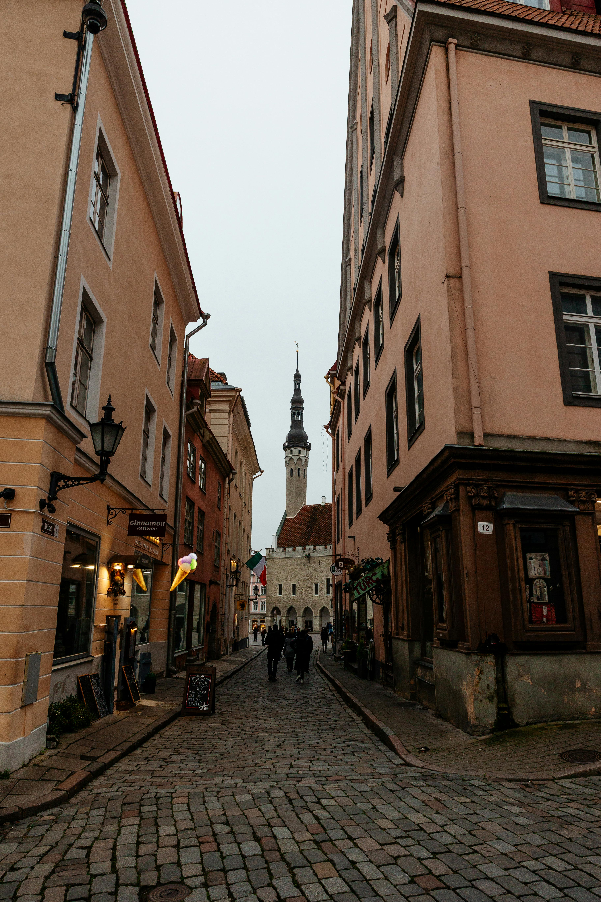
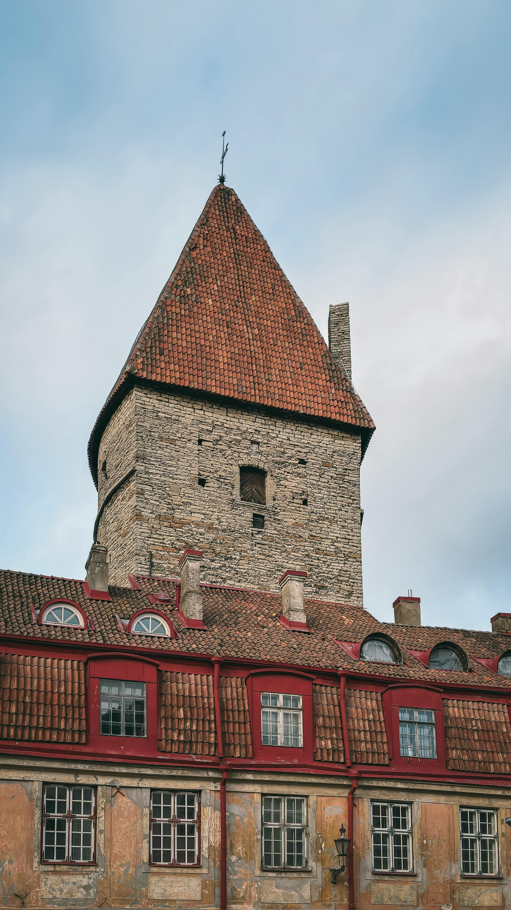
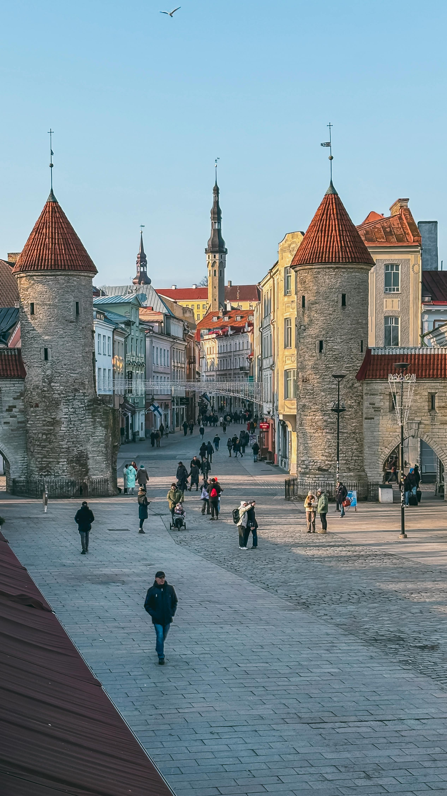
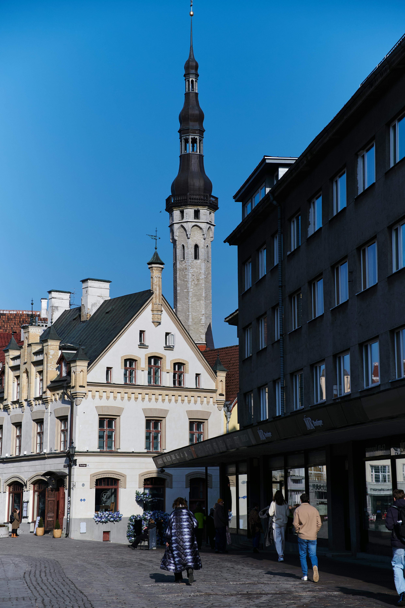

We spent three nights in Tallinn in 2010 and it was one of those city breaks that gets into your head and stays there. The Old Town is genuinely like walking into a medieval fairy tale — cobblestone streets, merchant towers, city walls still standing, red rooftops and church spires visible from every viewpoint on Toompea Hill. Beer served in clay mugs by staff in period costumes. Elk and wild boar by candlelight. And outside the perfectly preserved centre, the lingering atmosphere of a city caught fascinatingly between its Soviet past and its European future. All for a fraction of what it would cost in Dublin.




Tallinn in 2010 had a quality that is increasingly rare in European travel — it felt genuinely different. Not different like a city that has been styled to feel different, but different in the way that comes from a genuinely distinct history, a genuinely distinct culture and a recent past that was unlike anything in Western Europe. Estonia had been part of the Soviet Union until 1991, had joined the EU in 2004 and was in 2010 in this fascinating transitional state — rapidly modernising, clearly proud of its European identity, but with the Soviet era still visible in the architecture, the atmosphere and the faces of the older generation.
The contrast between the Old Town and the areas outside it was striking. Step inside the medieval walls and you were in a perfectly preserved UNESCO World Heritage site — cobblestones, towers, merchant houses unchanged in centuries. Step outside the walls and you were in a different city entirely — Soviet-era apartment blocks, broader streets, a grittier urban texture. Both were fascinating. Together they made Tallinn one of the most interesting cities we had visited anywhere in Europe.
Tallinn's Old Town is a UNESCO World Heritage Site and deserves every bit of that status — one of the best-preserved medieval city centres in Europe, with defensive towers and city walls still standing, merchant houses from the 13th and 14th centuries, cobblestone streets that have barely changed in 700 years and Town Hall Square at its heart that is simply one of the most beautiful squares in any European city.
We spent hours simply wandering — no particular agenda, just following whichever cobblestone street looked most interesting. Tallinn rewards this completely. Every corner reveals something new — a hidden courtyard, an ancient tower, a carved doorway, a narrow alley that opens unexpectedly onto a magnificent view. The city is compact enough that you cannot get seriously lost and beautiful enough that getting temporarily lost is no hardship at all.
Town Hall Square is the heart of Tallinn — surrounded by beautifully preserved medieval merchant houses, dominated by the Gothic Town Hall and full of café terraces, street musicians and the general energy of a square that has been the centre of city life for seven centuries. At Christmas it hosts one of Europe's oldest Christmas markets. In summer it buzzes with tourists and locals alike. At any time of year it is simply one of the most beautiful squares in Europe.
Toompea is the limestone hill above the Old Town — historically the seat of power in Estonia, now home to the Estonian Parliament (Toompea Castle), the Alexander Nevsky Cathedral and the best viewpoints over the city. The Kohtuotsa and Patkuli viewing platforms both look out over the extraordinary panorama of the lower Old Town — red rooftops, medieval towers, church spires and the sea beyond. The views are extraordinary at any time of day but spectacular at sunset when the light turns everything golden.
The Alexander Nevsky Cathedral is impossible to miss — an enormous Russian Orthodox cathedral in classic Byzantine-Revival style, all onion domes and elaborate decoration, built under Tsarist Russian rule at the end of the 19th century. It sits deliberately prominent on Toompea Hill, visible from across the city. Its presence in the heart of Estonian Tallinn tells a complicated story of imperial power and cultural imposition. It is also genuinely beautiful and one of the most photographed buildings in Estonia.
St Olaf's Church tower was, at various points in the 16th century, the tallest building in the world — a fact that the people of Tallinn mention with tremendous satisfaction. The medieval city walls are among the best-preserved in Northern Europe — large sections still standing, with towers you can walk inside including Kiek in de Kök, the most famous of the defensive towers, which now houses a fascinating museum of Tallinn's medieval military history.
Tallinn fully leans into its medieval identity when it comes to dining — and in 2010 the medieval restaurant scene was one of the highlights of any visit. These were not cheap tourist gimmicks but genuinely atmospheric, genuinely good restaurants in genuinely medieval buildings, serving genuinely medieval-inspired food with considerable skill and theatrical flair.
Olde Hansa is an institution — a medieval restaurant in a 15th-century building right in the Old Town, where staff dress in period costumes, the menu features elk, wild boar, bear meat, spiced wines and medieval recipes, and everything is lit by candlelight. The food is genuinely excellent, the atmosphere is extraordinary and the whole experience is one of those genuinely unique restaurant evenings that you remember for years. Book in advance — it is extremely popular and well deserved.
III Draakon is tucked inside the ground floor of the Town Hall itself — a tiny, atmospheric tavern serving simple medieval food and beer in clay mugs, staffed by characters in period costumes who stay firmly in character. It is cheap, chaotic and brilliant. The elk soup and the thick dark beer are exactly right. It has been operating in various forms since the 14th century and has no intention of modernising.
Estonian cuisine is hearty Northern European food built around game, pork, dark bread and root vegetables — and in Tallinn the medieval restaurant tradition gives it an extra dimension of drama and atmosphere that you won't find anywhere else. Everything was also, in 2010, almost startlingly cheap compared to Dublin.
Game meat on every medieval menu — rich, deeply flavoured and served with medieval spicing that genuinely works.
Dark Estonian beer served in heavy clay mugs in candlelit taverns. The single most Tallinn experience available.
Dense, slightly sour, served with everything. Estonian dark rye bread is extraordinary and the best you will find anywhere.
Warming game broth, perfect for cold Tallinn evenings. At III Draakon it comes in a clay bowl and costs almost nothing.
Honey wine spiced with herbs — served warm in the medieval restaurants and the most atmospheric drink in the city.
Tallinn has a centuries-old marzipan tradition — the shops around Town Hall Square sell extraordinarily beautiful hand-painted marzipan figures.
Walking into Tallinn's medieval Old Town for the first time is one of the great European travel moments — cobblestones, towers, merchant houses from the 14th century and the sense that time has genuinely paused here. A UNESCO World Heritage Site that completely earns its status.
Red rooftops, medieval towers and church spires spread below you, the Baltic Sea visible beyond. The Kohtuotsa and Patkuli platforms offer two of the most beautiful views of any European city, especially at sunset.
Elk by candlelight, staff in medieval costumes, clay mugs of dark beer in a 15th-century building in the heart of the Old Town. One of the most atmospheric and genuinely brilliant restaurant evenings we have had anywhere.
The Russian Orthodox cathedral looming over Toompea — beautiful, complicated, historically loaded and one of the most photographed and most striking buildings in Estonia.
The atmosphere of a city caught between its Soviet past and its European future — medieval Old Town inside the walls, Soviet apartment blocks outside, Russian spoken alongside Estonian. Fascinating and unlike anywhere in Western Europe.
Inside the Town Hall, clay mug of dark beer, elk soup, staff in period costume, candles. Almost impossibly atmospheric. Cheap as chips. Still one of the best pub experiences we have ever had anywhere.
Estonia is the natural starting point for a Baltic States tour — Tallinn to Riga in Latvia to Vilnius in Lithuania makes one of the great underrated European road trips. TourRadar has brilliant Baltic itineraries as well as standalone Tallinn city break options.
Disclosure: This is an affiliate link. If you book through it we may earn a small commission at no extra cost to you.
Old Town walking tours, medieval dinner experiences, Toompea guided visits, city wall and tower tours, Tallinn day trips and Helsinki ferry combinations — book in advance, especially the medieval dining experiences which fill up fast.
Disclosure: If you book through this link we may earn a small commission at no extra cost to you.
Klook has a good range of Tallinn and Estonia experiences — city tours, day trips and medieval experiences.
Disclosure: This is an affiliate link. If you book through it we may earn a small commission at no extra cost to you.
Common questions
What to pack for Tallinn
Tallinn means cobblestone walking, cold weather (especially outside summer) and evening restaurant dinners. Pack practically and warmly.
Estonia uses EU roaming rules but an eSIM gives you seamless data for navigating the Old Town's winding cobblestone streets.
View on Amazon →Tallinn is cold — especially in autumn and winter when the cobblestones are icy and the candlelit taverns are at their most atmospheric.
View on Amazon →The cobblestones in Tallinn's Old Town are beautiful and uneven — proper shoes with grip are essential, especially in wet or icy conditions.
View on Amazon →Long days of Old Town wandering and evening dining — keep your phone charged for maps and capturing the medieval atmosphere.
View on Amazon →For city days and market visits — keeps your essentials close while keeping your hands free for marzipan and clay mugs of beer.
View on Amazon →Estonia uses European two-pin plugs — a universal adaptor covers all your devices.
View on Amazon →Disclosure: These are Amazon affiliate links. If you buy through them we may earn a small commission at no extra cost to you.
Estonia is the northern anchor of the Baltic States — and sits just across the water from Finland. Read our other nearby guides below.
Just a two-hour ferry from Tallinn — the Church in the Rock, beautiful harbours and Nordic calm.
Read the Finland guide →The Russian influence so visible in Tallinn is explained fully in St Petersburg — imperial palaces, the Hermitage and the Neva at dusk.
Read the Russia guide →Vikings, fjords, Vigeland's naked statues and the most expensive round of drinks we ever paid for. A very different Nordic experience.
Read the Norway guide →Wander the cobblestones, climb to the Toompea viewpoints, eat elk by candlelight at Olde Hansa, have a clay mug of dark beer at III Draakon and let Tallinn's medieval magic do the rest. It is one of Europe's great undiscovered city breaks.
Affiliate disclosure: if you book through our links we may earn a small commission at no cost to you. We only recommend experiences we've done ourselves.